Mia Bougatsa comme en Grèce

Aujourd’hui je vous propose une recette qui va vous faire voyager car je propose un goûter typiquement grec avec la recette de la bougatsa!
L’an dernier je suis (enfin nous sommes) tombés sous le charme de la petite île de Rhodes, de ses habitants et de l’ambiance chaleureuse qui règne au travers des ruelles (article ICI) . En plus d’avoir eu droit à de splendides paysages nous avons été conquis par la nourriture grecque (c’est la balance qui s’en souvient!!!)! Entre spanakopita, souvlaki, kadaïf et café frappé nous avons été servis! Lors d’une balade au monastère de Panormiti à 40 minutes en bateau de l’île de Simi nous avons découvert la bougatsa dans une toute petite pâtisserie et j’en suis tombée raide dingue! La bougatsa est une pâtisserie à base de pâte filo garnie d’une crème vanillée préparée avec de la semoule. Traditionnellement les Grecs préparent la bougatsa pour leurs petits déjeuners mais ça fait aussi très bien l’affaire pour un délicieux goûter! Garnie de semoule, de viande ou de fromage il y en a pour tous les goûts 🙂 Dans la recette que je vous propose aujourd’hui j’ai rajouté des amandes effilées mais si vous voulez vous préparer une authentique bougatsa supprimer cette étape! J’espère que cette recette venue d’ailleurs vous ouvrira l’appétit!! Je vous laisse maintenant la découvrir 🙂
Ingrédients
- Pâte filo - 16 feuilles
- Maïzena - 30g
- Semoule fine - 55g
- Sucre semoule - 140g
- Vanille - 1 gousse
- Lait - 620ml
- Beurre - 200g
- Amande effillées
- Cannelle
- Sucre glace
Instructions
- Dans un grand saladier, mélanger la maïzena, la semoule, le sucre et le lait Pour que le sucre soit bien dissous il est conseillé d'utiliser du sucre très fin. Si vous n'avez pas de sucre fin vous pouvez passer votre sucre dans un mixeur et donner deux trois impulsions pour le rendre très fin.
- Bien mélanger et ajouter la gousse de vanille Ouvrez la gousse en deux et récupérer les petits points noirs à l'intérieur
- Transvaser le mélange dans une casserole et mélanger à l'aide d'une cuillère en bois à feu moyen
- Mélanger jusqu'à ce que le mélange épaississe
- Une fois que le mélange a bien épaissi, hors du feu, mélanger pour éliminer d’éventuels grumeaux Si vous avez bien mélangé à l'étape précédente il ne doit pas y en avoir
- Couvrir et laisser refroidir
- Pendant ce temps, préparer vos feuilles de pâte filo
- Faire fondre le beurre
- Étaler du beurre au pinceau sur la première pâte filo et poser la deuxième feuille dessus
- Répéter l’opération jusqu'à la quatrième feuille
- Verser de votre mélange au centre de la pâte filo (environ 170g pour moi)
- Plier votre bougatsa en serrant bien pour éviter que cela ne coule dans le four
- Badigeonner de beurre
- Enfourner pour 15-20 minutes à 180° (il faut que ce soit doré) Avant d'enfourner j'ai ajouté des amandes effilées sur chaque bougatsa (facultatif)
- A la sortie du four, saupoudrer de sucre glace et de cannelle
- Se déguste tiède ou froid à vous de voir!
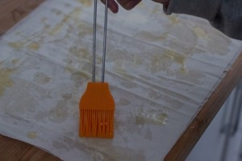
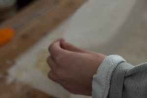
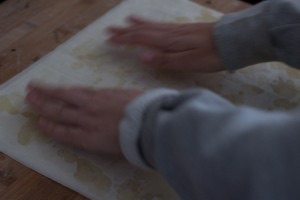
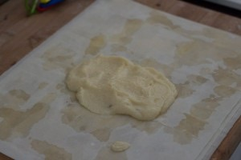
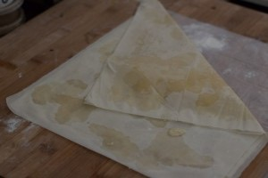
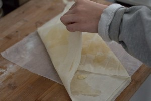
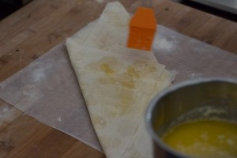
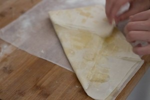
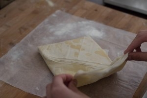
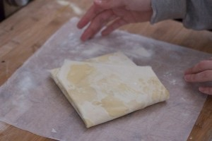
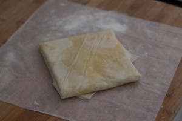
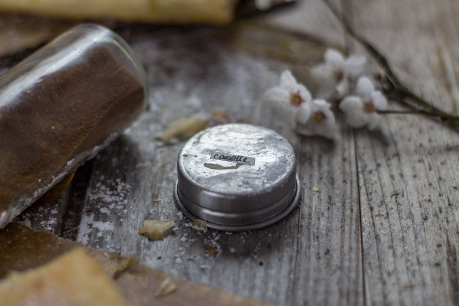
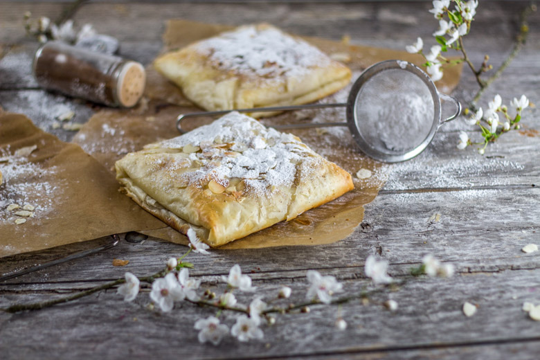
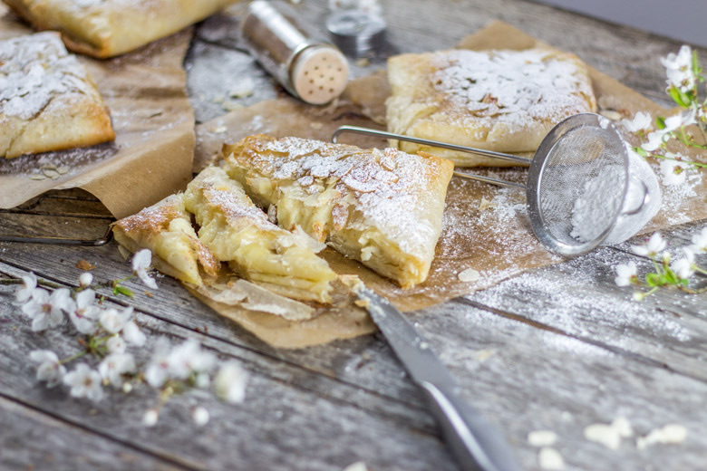
Les tips de la communauté
Découverte culinaire très bien accueillie. De nombreux commentateurs n'avaient jamais goûté cette spécialité grecque avant. Un lecteur remarque que la portion est bourrative et conseille de compter une portion pour deux personnes. L'auteure note que la pâte filo était oubliée en premier lieu (erreur corrigée). Un commentaire grec authentique valide la recette comme proche de l'original.
Astuces
- Utiliser de la crème de lait moyen-orientale pour rendre le dessert plus léger
- C'est un dessert très copieux, prévoir les portions en conséquence
- La recette suit de près la vraie recette grecque selon un commentateur grec
Ajustements signalés
- La recette demande un nombre spécifique de feuilles de pâte filo (erreur corrigée)